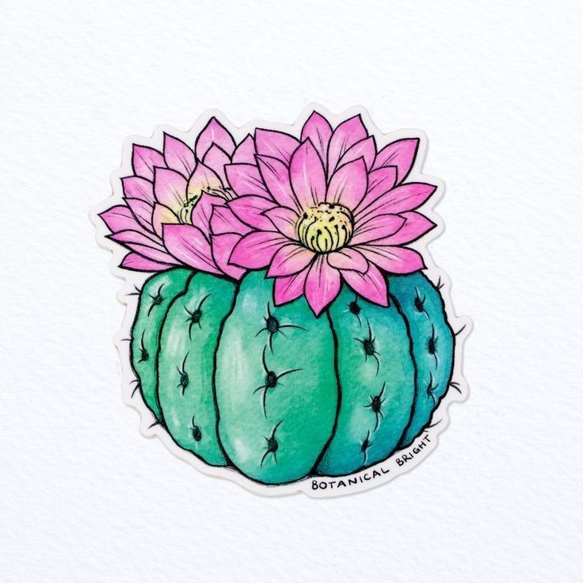

BUENAS TARDES
Mi nombre es:
Federica conradi
Objetivos del curso:
Aprender y trabajar de esto.
Tengo 24 años, toda mi vida fui de BS AS,Argentina.
Multimedia

Como preparar un mate en 5 pasos:
- Calentar el agua, sin que llegue a hervir.
- Ponerle yerba al mate.
- Buscar azucar si te gusta dulce, sino evitar.
- cargar el termo con el agua.
- cebar el mate.
listas de quienes toman